В двух словах что происходит при логинизации. Мы отправляем на сервер данные пользователя как правило это логин и пароль (в качестве логина у нас будет адрес электронной почты). Сервер обрабатывает присланные данные и зашивает в cookie идентификатор. Значит что бы залогинится с нашей старницы нам надо создать POST запрос и передать в качестве тела запроса данные с формы. После того как сервер выдаст статус ответа "без ошибок", мы запускаем thunk который делает запрос на сервер с вопросом "МЫ АВТОРИЗОВАНЫ?", если да, то сервер возвращает нам наш ID, EMAIL и LOGIN. После этого мы полученные данные диспатчим в state. В state мы храним еще один показатель - isAuth, который содержит булевое значение: true - если мы авторизованы и false если нет. В зависимости от этого показателя нам будут доступны разделы сайта. Для лучшего понимания нарисуем схему:
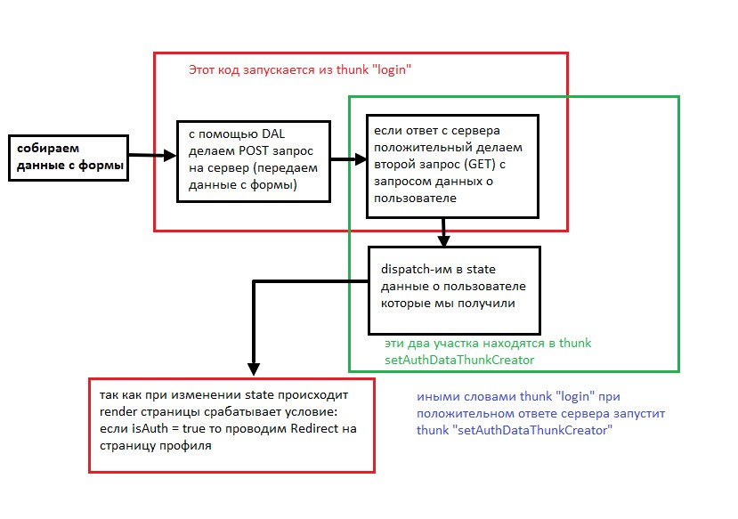Начнем с того что создадим метод в REST API
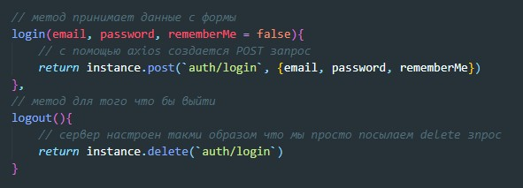Теперь нужно создать thunk которая будет делать запросы на сервер и диспатчить результат ответа
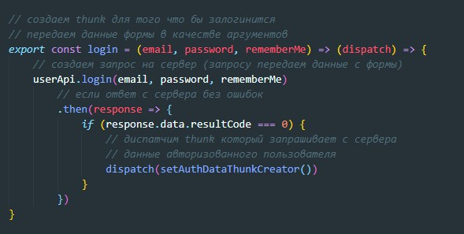Теперь посмотрим на thunk который запрашивает данные авторизованного пользователя

Данные которые мы передали запишутся в state? после того как state будет изменен, произойдет перерисовка страницы. На странице логина мы записываем условие:
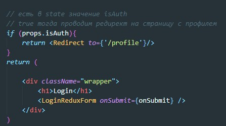Что бы thunk login запускался при submit формы протаскиваем через пропсы функцию до компоненте и указываем ее на обработчике события submit
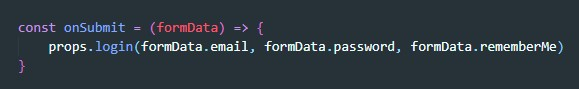Что должно произойти если мы нажмем на кнопку LogOut? на сервер отправится DELETE запрос. При таком запросе никакие данные на сервер не отсылаются, сервер сам почистит в cookie свой идентификатор. После того как мы отправили delete запрос нам надо вызвать dispatch на вход которому передадим action с пустыми (null) параметрами
api
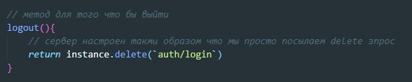thunk

Если после отправки введенных данных сервер нам вернул ошибку, т.е. response.data.resultCode !== 0 то мы должны посмотреть что именно нам вернул сервер скорее всего там будет в data зашито какое-то сообщение.
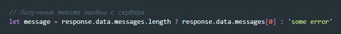После этого нам нужно создать action с помощью метода stopSubmit этот метод мы импортируем из библиотеки redux-form
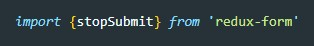stopSubmit принимает два аргумента. первый аргумент - это имя формы. Имя формы мы указывали при создании формы с помощью reduxForm. Второй аргумент принимает объект с одним ключем. В качестве ключа (имени свойства мы указываем либо имя филда, либо можем использовать глобальное имя _error) в качестве значения мы передаем текст сообщения, которое получили от сервера
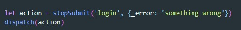Этот же код можно написать короче:
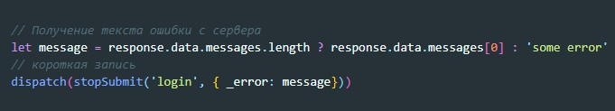Теперь переходим в компоненту которая отрисовывает нашу форму и там вводим вот такой код:
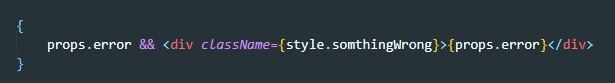Form-redux прокинет в пропсы свойство error в случае ошибки там будет текст ошибки. Если он есть то отображаем блок внутри которого помещаем текст ошибки
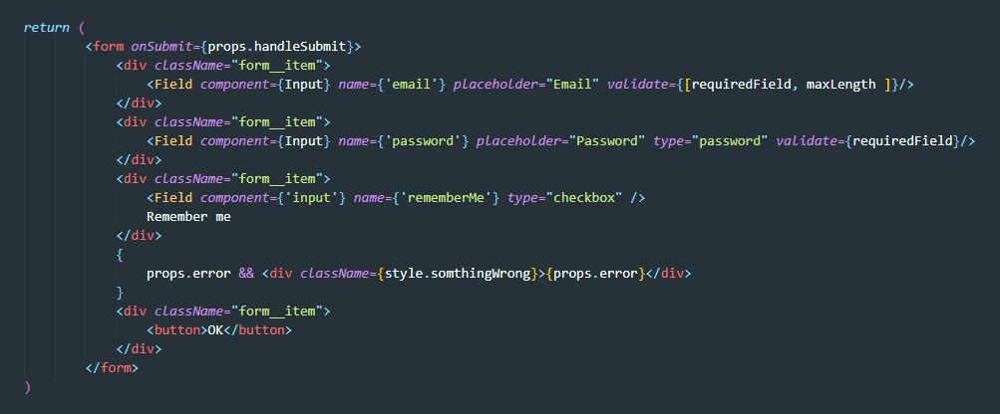